Usability Test 1
Task 1: Begin and finish a navigation for Stone Hill
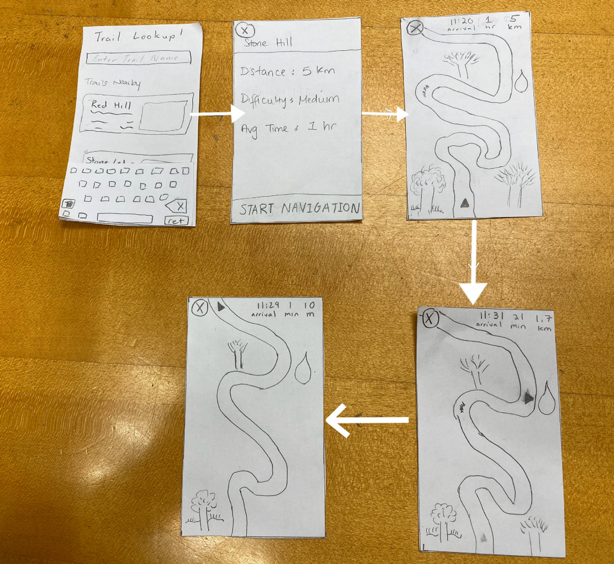
Task 2: Identify and learn about 2 different plant species
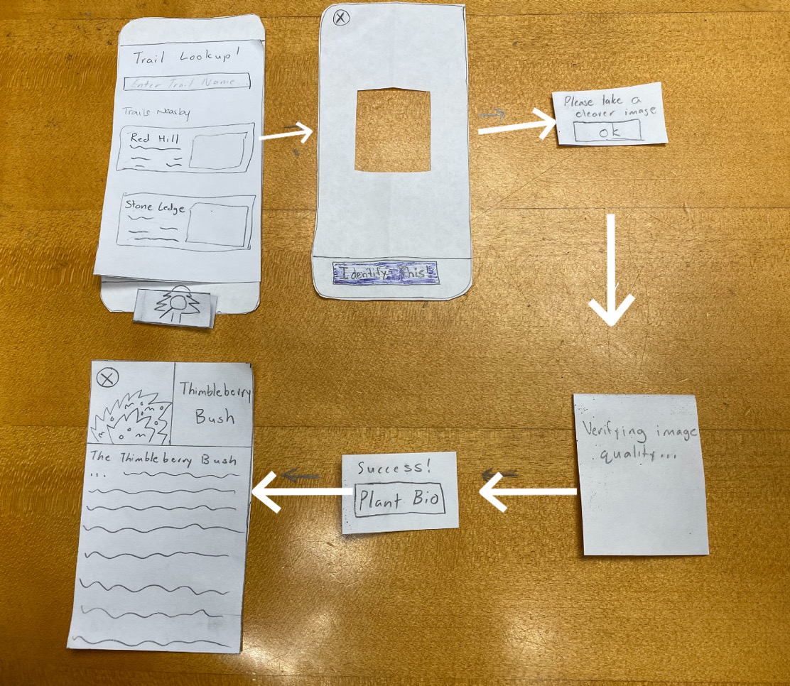
Summary
The participant for our usability test was a sophomore attending Williams College. We chose this participant because she is enthusiastic about hiking and enjoy going on a weekly trip around the beautiful purple valley. With this knowledge, the team figured she would be the perfect candidate to test out our app and to see if our prototype design was somewhat feasible. We conducted our usability test in Eco Cafe, where its central and quiet during after- hours. This allowed us and our participant to focus on the task at hand and provide a space to free the mind and provide a clear discussion. During the usability test, Gaurnett was the main one communicating with our user. Eric acted as the \"computer\". Rudy assisted with making notes about what happened during the test such as the user feedback and questions during the test, flaws in the design that led to the customer performing the wrong action thus not receiving her desired result and improvements we can make based on the interaction between Gaurnett and the user.
We introduced the project by giving a synopsis of the problem that we are trying to solve as well as who we are trying to serve. This allowed us to give a general overview of the project and give the participant an idea of what we are trying to do. Afterwards we explained the tasks one by one that we would like her to perform. We then observed her as she went through the app and then made notes on issues that came up. One issue was that we did not have a sign up button on the login screen. Another issue we had was when she tried to identify the plant. She tapped the focal box to take the picture instead of tapping the “Identify This” button.
Issues Overview
| Heuristic Broken | Description | Severity | Revisions |
|---|---|---|---|
| Recognition | No signup button | 4 | We added a sign up button to allow our users to sign up for the app. |
| Control & Freedom | Wanted to click the nearby trails before searching (need to add screens for that) | 1 | |
| Real World Mapping | Clicked the focal point instead of the "take a picture" button | 2 | If the user double taps the focal point then it will take a picture. |
More on Usability Test 1
Usability Test 2
Task 1: Pick the shortest nearby hike and leave a rating
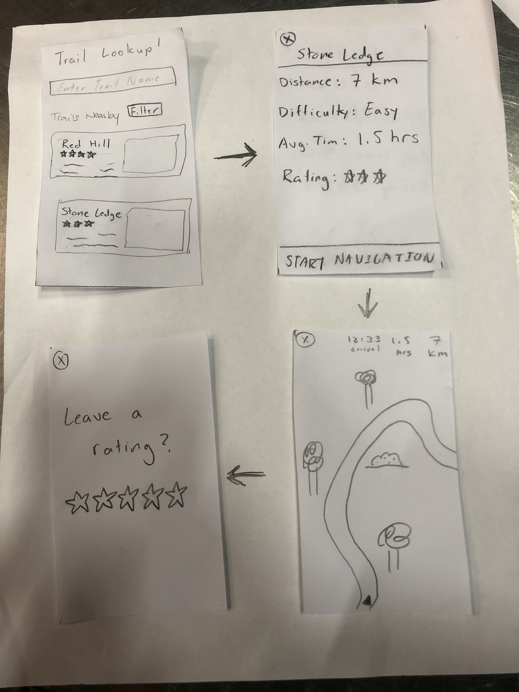
Task 2: Identify a plant from the Rosaceae family
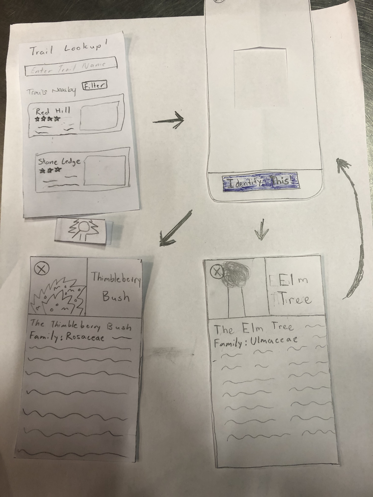
Summary
The participant for our second usability test was a junior attending Williams College. As we indicated in our future plans from the usability test check-in, for this test and the third test, we tried to emphasize diversity in the experience levels of the students that we had perform the test. Thus, this student was one who had minimal experience with hiking, but enjoyed the idea of walking around in nature. We thought that through bringing in the experience of a user like this, we might be able to see if our design was simple and informative enough to be beneficial to a beginner user rather than confusing. Like the last test, this one was conducted in Eco Café at night as the location was quiet which allowed everyone to focus on the task. For this test, Rudy was the main person interacting with the user while Gaurnett played the part of the computer and Eric took notes.
The general process of the test was the same as for the first usability test with us starting by explaining the purpose of the test and the two tasks we wanted the user to perform. The tasks that we gave the user for this test were a bit more specific in that we asked the user to pick the shortest nearby hike and begin navigation for that route and we asked them to identify a wildlife that they observe in their Biology Class. One key difference though was that we aimed to provide a bit less guidance than we did in the first test by encouraging the user to think a little deeper about some of the questions they had rather than answering every question about functionality and what different buttons did.
Issues Overview Negative
| Heuristic Broken | Description | Severity | Revision |
|---|---|---|---|
| Recognition | The user was not aware initially that you could scroll through the nearby hikes | 2 | We will add a scroll bar that is visible |
| Control and Freedom | The user had initial issues verifying their rating submission and selecting their rating | 3 | We will add more user feedback to the rating system and labels to clarify the rating system |
Revision 1
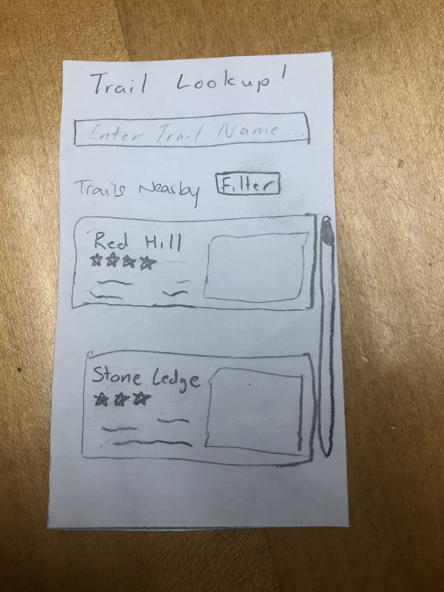
Here we added a visual scroll bar so users can know that they can scroll to see more hikes.
Revision 2
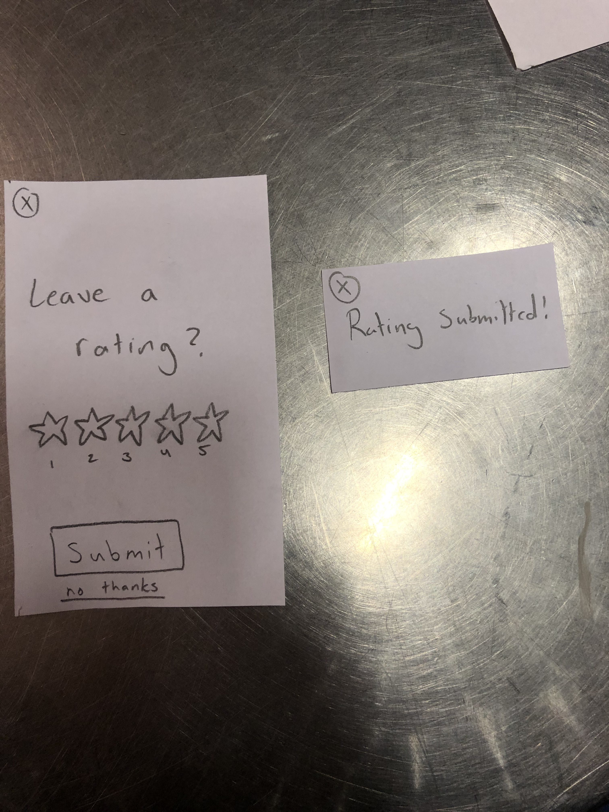
Here we have changed the "leave a rating" system to provide the user with more feedback. Now, it will be more clear on how to choose how many stars and making sure they submit a rating if they want to.
Issues Overview Positive
| Description |
|---|
| They said the identifying feature was very useful and can become handy to a lot of students who aren’t just looking for identifying things in the wild but also identifying other nature based things that they interact with regularly |
Usability Test 3
Task 1: Find a hike with a 5 star rating and leave a rating
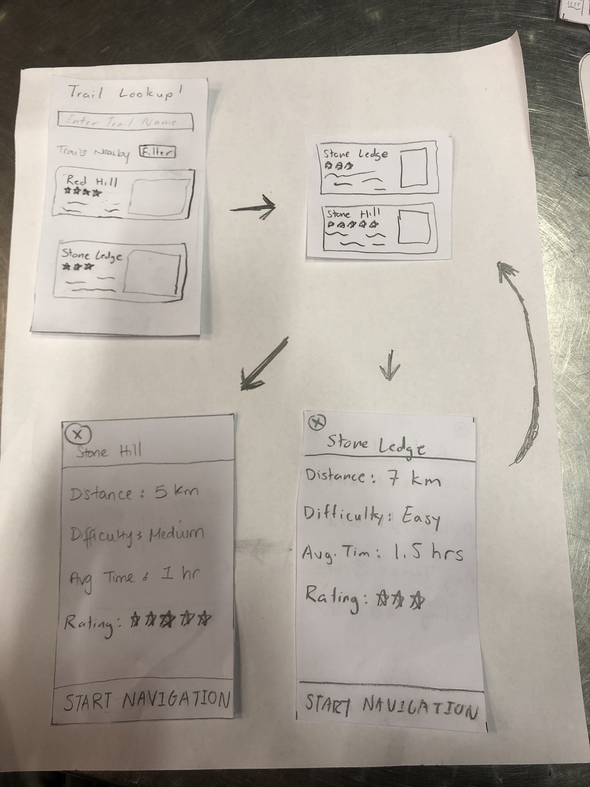
Task 2: Identify an animal
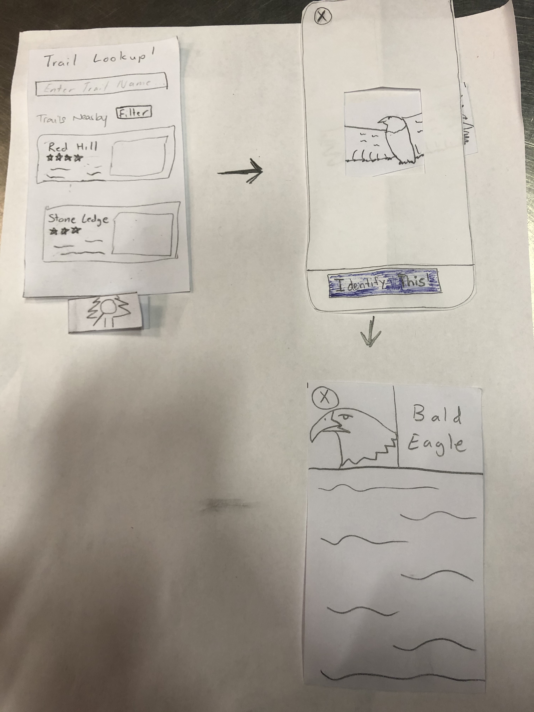
Description
The participant for our third usability test was a junior attending Williams College. This time around the participant was an expert at hiking with them frequently going on short hikes alone and longer hikes as part of WOC. Like the other tests, this was performed in Eco Café during the evening when the area was not being utilized by many students. For this test, we wanted to emphasize finding possible ways in which our design may not be intuitive for people who have experience hiking. As our design team does not consist of hiking experts, we thought it would be important to see if both the navigation and wildlife identification aspects of hikAR were intuitive for a frequent hiker. For this particular test, we had Eric take the lead on guiding the user while Rudy moved the pieces of the paper prototype around and Gaurnett took notes on what he observed.
Considering the success we had with offering little information to the user as they worked through their assigned tasks, we implemented the same game plan for this test as we did for our second usability test. We explained a bit about our project and how the user’s help would be critical to improving our design as a whole before explaining the two tasks that we wanted them to achieve. This time we asked our user to navigate to a hike based on our recommendation system. We asked them to pick a hike that was rated 5 stars and identify an animal that is running around at the school.
Issues Overview Negative
| Heuristic Broken | Description | Severity | Revisions |
|---|---|---|---|
| Recognition | We asked our user to pick a hike that was rated 5 stars but there was none nearby that matched his skill level. It seemed as if most of the 5 star rated ones were beginner hikes and they were not ones that will match his recommendations. | 2 | Rather than forcing users to scroll down the list of nearby trails to find one that matches their preferences, we revised our design to include an option that allows the user to filter routes by difficulty to allow users to quickly find routes that meet their preferences |
| Error Prevention | It was pretty hard to identify the animal because it was moving. To get a good picture of the animal, the user will have to hope that it stops moving so that the perfect shot can be captured | 4 | Another revision that came up was the scaling of the identification camera focal point. For object that are larger than the focal square, it would be more efficient if the user can expand the focal point in order to capture the right image of the object they are trying to find. This will allow them to capture bigger pictures and thus get more out of their experience. |
Revision 1
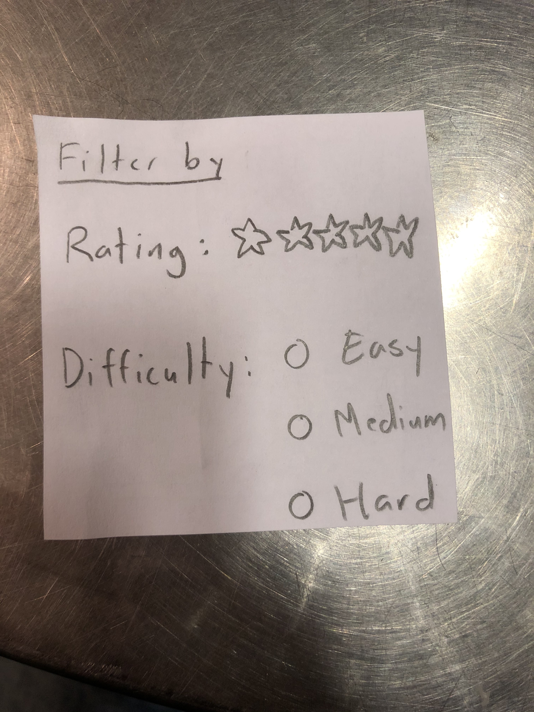
We have added a filter function so that users who didn't realize you can scroll/don't want to can find hikes with this instead and so that users could have more preferences in what kind of trails show up on the main screen.
Revision 2
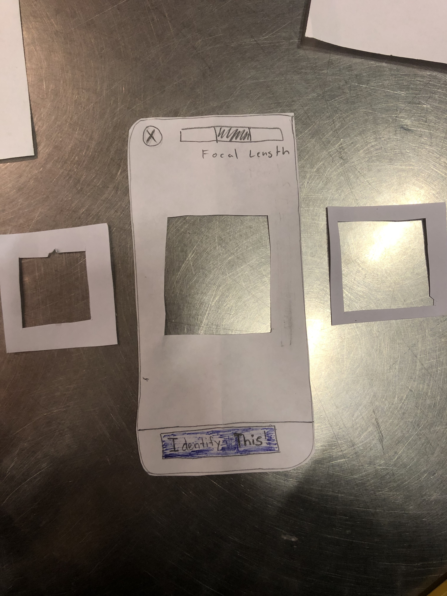
We have changed our camera taking function so that there are 3 different focal sizes for image taking. This way, it will be easier for users to take images from more distances. Also, while not on the paper, if a user double taps the focal area, a picture will be taken.
Issues Overview Positive
| Description |
|---|
| The user liked that we had a recommendation system based on the hiking experience of other users. This will help other users to get a better sense of what is around them. |
Final Prototype Overview
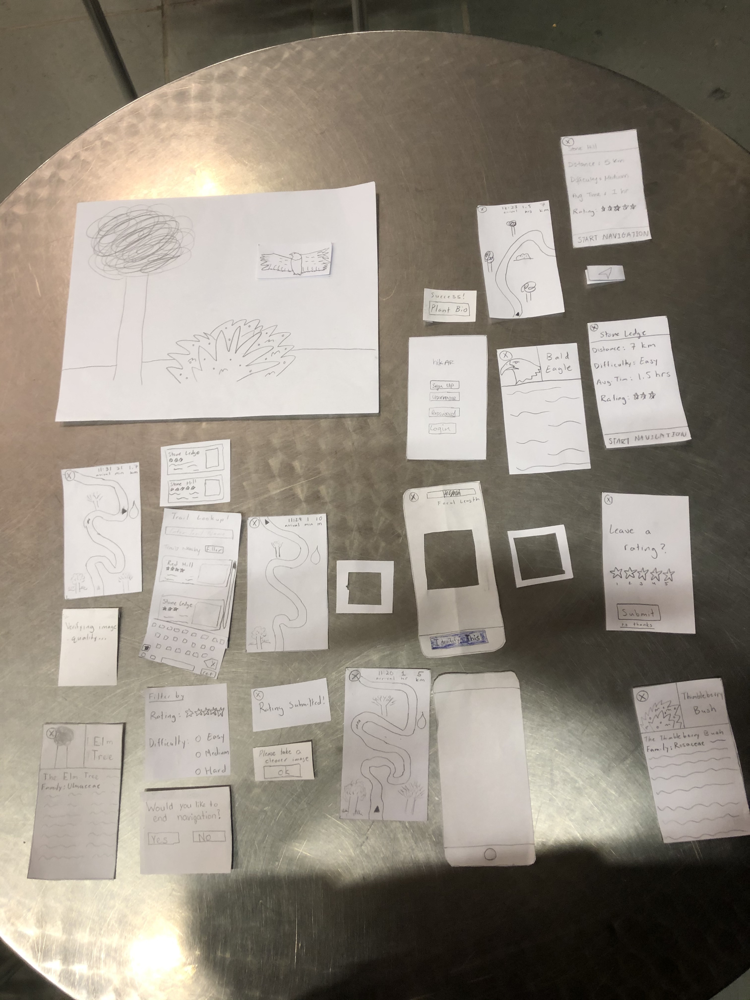
Important Revisions
A critical issue that was detected during our cognitive walkthrough was the lack of a warning message when quitting navigation. This revision was important because it saves a lot of time and confusion on the part of the user if they accidentally click on the exit button in the corner. If this were to happen during a hike, the user could get lost or frustrated which are both feelings and experiences that hikAR is supposed to address and prevent. While the user could search for the route again and restart routing, the addition of a warning message when the user clicks on the exit button can help prevent that from happening in the first place at minimal cost to the average user.
In our third usability test, we found that the user was unable to quickly find a five-star rated trail that matched their expert skill level. Rather than forcing users to scroll down the list of nearby trails to find one that matches their preferences, we revised our design to include an option that allows the user to filter routes by rating and difficulty to allow users to quickly find routes that meet their preferences
Another revision that came up was the scaling of the identification camera focal point. For object that are larger than the focal square, it would be more efficient if the user can expand the focal point in order to capture the right image of the object they are trying to find. This will allow them to capture bigger pictures and thus get more out of their experience.
We have decided to change the image/identification utilities. Now, once a user takes a picture, the app will give feedback on the picture immediately, telling the user to either take the picture again or identifying the plant correctly. This will eliminate the confusion and ambiguity in user action.